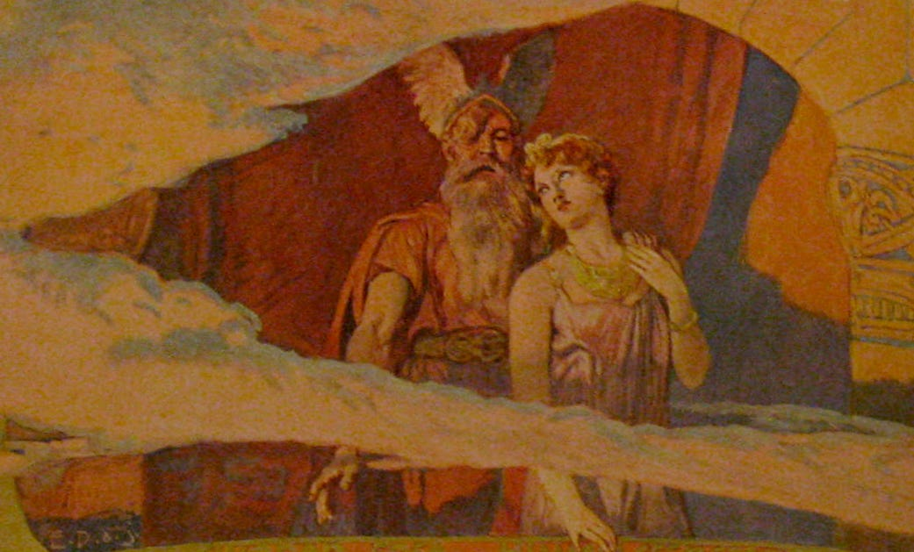

Odin, Frigg and the Origin (Myth) of the Lombards
A piece of Germanic mythology in Latin
The vast majority of our sources for pre-Christian Germanic religion, culture and folklore comes just from the Norse people. The reasons for this are many and complicated and I am not particularly well informed on the subject to give the exact reasons. So, I can only give my personal opinion. The conversion to Christianity of Norse people did happen much later than of the continental Germanic groups or of Anglo-Saxons. Even after the conversion to Christianity, the Norse, and especially Icelanders, seem to have maintained a greater interest in the religion of their ancestors than pretty much all of Europe. So it happens that a majority of surviving textual sources for Germanic religion and myth are biased towards Norse (and especially Icelandic) tradition.
There are, however, some non-Norse sources in a variety of languages. Old English poems often refer to old Germanic heroes[1]. Beowulf, for example, is both set in Scandanavia and referencess to a host of characters that are often known later in Norse poetry and sagas. It even contains the first literary mention of the famous Volsung cycle. From Germany, there are some shorter charms that are quite important for the study of folk-healing practices but the epic traditions of the Nibelungs, Dietrich von Bern and similar figures are more prominent.

Wodan and Frea stand out and look out of a window in the heavens. From Emil Doepler. ca. 1905. Walhall, die Gotterwelt der Germanen
Latin, though not a Germanic language, might be behind only Old Norse in terms of source volume. From Tacitus’ Germania in the first century CE to Saxo’s Gesta Danorum (Deeds of the Danes) in the thirteenth, various accounts of pre-Christian Germanic peoples and their customs in Latin, both by outsiders and insiders, survive.
In late antiquity, various people-groups in Europe and western Asia impelled by a whole host of reasons moved out of their lands and migrated, in a period often called the Migration Period (or Völkerwanderung ‘Wandering of the People’ in German). A number of these, mostly Germanic peoples, settled and then carved out their own kingdoms as the Roman Empire faded away in the fifth century. Goths and Franks are the more well known but there were plenty more. When Byzantine reconquest of Italy (535-553 CE) devastated much of Italy, leaving both the Goths and the imperialists in a reeling state in its aftermath, Lombards invaded and settled large parts of the peninsula (568 CE). The kingdom of the Lombards would survive upto the eight century when it was finally conquered by Charlemagne.
These Lombards, like the Goths who had invaded Italy a century prior, were a Germanic people. Like the Goths too, they claimed to be descended from people who had migrated from Scandanavia. Although the majority of the Lombards were probably Christians by the time they invaded Italy, their origin myth still deals with their pre-Christian gods and thus make for interesting reading.
Origin of the Lombard people
The major source for this origin myth is the anonymous Origo Gentis Langobardorum (Origin of the Lombard people), dating from the 7th century. The first part of this short text contains the origin myth of the Lombards. The text is given in the original Latin and in an English translation[2].
Original Latin Text
Est insula qui dicitur Scadanan, quod interpretatur excidia, in partibus aquilonis, ubi multae gentes habitant; inter quos erat gens parva quae Winnilis vocabatur. Et erat cum eis mulier nomine Gambara, habebatque duos filios, nomen uni Ybor et nomen alteri Agio; ipsi cum matre sua nomine Gambara principatum tenebant super Winniles. Moverunt se ergo duces Wandalorum, id est Ambri et Assi, cum exercitu suo, et dicebant ad Winniles: " Aut solvite nobis tributa, aut praeparate vos ad pugnam et pugnate nobiscum". Tunc responderunt Ybor et Agio cum matre sua Gambara: "Melius est nobis pugnam praeparare, quam Wandalis tributa persolvere". Tunc Ambri et Assi, hoc est duces Wandalorum, rogaverunt Godan, ut daret eis super Winniles victoriam. Respondit Godan dicens: "Quos sol surgente antea videro, ipsis dabo victoriam". Eo tempore Gambara cum duobus filiis suis, id est Ybor et Agio, qui principes erant super Winniles, rogaverunt Fream, uxorem Godam, ut ad Winniles esset propitia. Tunc Frea dedit consilium, ut sol surgente venirent Winniles et mulieres eorum crines solutae circa faciem in similitudinem barbae et cum viris suis venirent. Tunc luciscente sol dum surgeret, giravit Frea, uxor Godan, lectum ubi recumbebat vir eius, et fecit faciem eius contra orientem, et excitavit eum. Et ille aspiciens vidit Winniles et mulieres ipsorum habentes crines solutas circa faciem; et ait: "Qui sunt isti longibarbae" ? Et dixit Frea ad Godan: "Sicut dedisti nomen, da illis et victoriam". Et dedit eis victoriam, ut ubi visum esset vindicarent se et victoriam haberent. Ab illo tempore Winnilis Langobardi vocati sunt.
English Translation
There is an island called Scandan (which means ‘destruction’) in the north where many peoples live. Among them live a people called Winnils. Among the Winnils was a women named Gambara, who had two sons named Ybor and Agio respectively.They, along with ther mother named Gambara, reigned over the Winnils. Now the leaders of Wandals, i.e. Ambri and Assi, moved with their army and said, “Either pay us tribute or be ready to fight and fight with us.” Then Ybor and Agio said to their mother Gambara, “It’s better for us to prepare war than to pay tribute.”
Then Ambri and Assi, i.e the leaders of the Wandals, asked Godan to give them victory over the Winnils. Godan responded, “I’ll give victory to whomsoever I see first after the rising of the sun.” At this time, Gambara, with her two sons Ybor and Agio, the leaders of the Winnils, asked Godan’s wife Frea that she be propitious towards Winnils. Then Frea advised (her) the Winnils should come a sunrise, and their women should leave their hair around their face like beards and come with their husbands. When the sun rose with light, Godan’s wife Frea turned the bed of her husband towards the east and woke him up. He saw the Winnils and their women with hair around the face, he said, “Who are these longbeards ?” And Frea said to Godan, “Just as you have given them a name, give them victory as well.” Thus, he gave them victory, so that where …. From that time Winnils are called Lombards.
Some Comments
The island of Scandan is obviously Scandanavia. The Wandals who fight against the Winnils are probably the Germanic tribe of Vandals who in the twilight years of the Western Roman Empire conquered the province of Africa (in todays Tunisia and neighboring parts). Words like ‘vandal’ and ‘vandalism’ supposedly testify to their rather destructive rule as foreign military elite.
The name of the first of the two gods in this little story is likely familiar to anyone interested in Norse myths. Godan is the Lombard name of a god common to a host of different Germanic people. Odin (from Old Norse Óðinn) is perhaps the most common form of this name encountered in modern English though Wodan is sometimes seen in older books. He was known as Wōden in Old English, Wōdan in Old Saxon, and Wuotan in Old High German, all from Proto-Germanic *Wōðanaz. People familiar with Wagner’s operas might know the modern German form Wotan. Godan, then, is the Lombard form of the god’s name. This little story is one the earliest mention of Odin in a literary source[3], though there are earlier runes that mention him. [4]
The second one looks familiar too. Frea sounds similar enough to Old Norse Freyja. But the exact linguistic cognate of Frea here is apparantly not Freyja but Frigg. I’m not a historical linguist, so, I can’t present what sort of laws of sound changes are involved here but it seems to be the scholorly consensus. Frigg is, like Frea here, the wife of Odin in what we know of Norse mythology in later times. In this context, it’s interesting to note that some scholars have speculated that Frigg (meaning ‘lady’) and Frejya (meaning ‘dear’) might have been two names or epithets of the same goddess and that were later reinterpreted as two distinct goddesses. Though there are some interesting hints for this in the Old Norse corpus (Frejya’s husband Óðr, for example, is most probably Odin himself), they seem to have been treated as two distinct characters by the time we get Eddic poetry. I wonder whether or not Frigg and Freyja were distinct for the author of Origo.
An interesting point is Frea’s reasoning when asking Godan to give victory to the Winils. And Frea said to Godan, “Just as you have given them a name, give them victory as well.” It might not be clear why exactly giving someone a name would necessarily imply giving them some another gift (victory in this case) as well. I think the reason behind it could be connected to the naming ceremony for newborns. At least in Old Norse sources, newborns seen to have been given some sort of gifts both by their parents and also by the guests present during the ritual. Of course the longbeared Winils are not literally newborns but giving a new name and identity, as Godan does here, might be the ocassion for giving gifts to the newly named ones nonetheless. Of course, it might not be actual usual practice but it seems likely to me nonetheless.
The eddic poem Helgakviða Hjörvarðssonar ( The Lay of Helgi, son of Hjorvard) contains a passage that supports this theory. The hero Helgi never speaks a word from his birth and no name is given to him by his parents. Later (the time is not specified but he seems to be a young man already) he encounters a group a valkyries and one of whom calls him with the name Helgi. He, however, says that he won’t accept whatever gift she will give him after giving him a name unless he can have her. [5]
King Hjǫrvarðr married Sigrlinn, and Atli Álǫf. Hjǫrvarðr and Sigrlinn had a son mighty and handsome. He was silent. No name stuck to him. He sat on a burial mound. He saw nine valkyries riding, and one was the noblest. She said:
6. ‘You’ll be late, Helgi, to rule rings, mighty strife-apple-tree, or Rǫðulsvellir — an eagle screamed early — if you always keep silent, even if, king, you prove your hard heart!’7. ‘What will you let accompany the name “Helgi”, bright-faced bride, since you have the authority to offer? Think well before all decisions! I won’t accept it, unless I have you!
Paul the Deacon’s History of the Lombards
Paul the Decacon’s late eigth century Historia Langobardorum (History of the Lombards) gives a similar origin story in its first book. Paul, however, as a highely educated man of his time and a Christian deacon doesn’t just pass over the story in a mostly neutral way, like the anonymous author of the Origo, but comments on the its ridiculousness. He has his own take on why Lombards were called so. Using interpretatio Romana, he identifies Godan with the Roman Mercury and inheriting a Christian tradition of euhemerizing pagan gods corrects, so to speak, his source that Godan (or Mercury) lived as a man in Greece in far earlier time period than the one in his narrative[6].
Original Latin Text
1.7 Igitur egressi de Scadinavia Winili, cum Ibor et Aione ducibus, in regionem quae appellatur Scoringa venientes, per annos illic aliquot consederunt. Illo itaque tempore Ambri et Assi Wandalorum duces vicinas quasque provincias bello premebant. Hi iam multis elati victoriis, nuntios ad Winilos mittunt, ut aut tributa Wandalis persolverent, aut se ad belli certamina praepararent. Tunc Ibor et Aio, adnitente matre Gambara, deliberant, melius esse armis libertatem tueri, quam tributorum eandem solutione foedare. Mandant per legatos Wandalis, pugnaturos se potius quam servituros. Erant siquidem tunc Winili universi iuvenili aetate florentes, sed numero perexigui, quippe qui unius non nimiae amplitudinis insulae tertia solummodo particula fuerint.
1.8 Refert hoc loco antiquitas ridiculam fabulam: quod accedentes W andali ad Godan victoriam de Winilis postulaverint, illeque responderit, se illis victoriam daturum quos primum oriente sole conspexisset. Tunc accessisse Gambaram ad Fream, uxorem Godan, et Winilis victoriam postulasse, Freamque consilium dedisse, ut Winilorum mulieres solutos crines erga faciem ad barbae similitudinem componerent maneque primo cum viris adessent seseque a Godan videndas pariter e regione, qua ille per fenestram orientem versus erat solitus aspicere, collocarent. Atque ita factum fuisse. Quas cum Godan oriente sole conspiceret, dixisse: «Qui sunt isti longibarbi?». Tunc Fream subiunxisse, ut quibus nomen tribuerat victoriam condonaret. Sicque Winilis Godan victoriam concessisse. Haec risu digna sunt et pro nihilo habenda. Victoria enim non potestati est adtributa hominum, sed de caelo potius ministratur.
1.9 Certum tamen est, Langobardos ab intactae ferro barbae longitudine, cum primitus Winili dicti fuerint, ita postmodum appellatos. Nam iuxta illorum linguam lang longam, bard barbam significat. Wotan sane, quem adiecta littera Godan dixerunt, ipse est qui apud Romanos Mercurius dicitur et ab universis Germaniae gentibus ut deus adoratur; qui non circa haec tempora, sed longe anterius, nec in Germania, sed in Grecia fuisse perhibetur.
1.10 Winili igitur, qui et Langobardi, commisso cum Wandalis proelio, acriter, utpote pro libertatis gloria, decertantes, victoriam capiunt. Qui magnam postmodum famis penuriam in eadem Scoringa provincia perpessi, valde animo consternati sunt.
English Translation
1.7 Then the Winils, who had moved out of Scandanavia with their leaders Ibor and Aio came to the region called Scoringa and settled there for some years. At that time Ambri and Assi, the leaders of the Wandals, were subduing the neighboring provinces by war. Much elated by their victories, they sent heralds to the Winils to either pay tribute to the Wandals or to prepare for war. Then Ibor and Aio deliberated with the help of the mother Gambara that it would be better to defend their freedom with arms than to mar it by paying tribute. So, they send messengers to the Wandals saying that they would rather fight than serve. And though the Winils were then all in the flower of their youth, they were rather few in numbers. They had been, afterall, just a third part of an island of no considerable size.
1.8 Antiquity provides us with a rather silly story at this point that the Wandals asked Godan for victory over the Winils and that Godan responded that he’d give them victory if they were seen first when the sun rose (the next day). Then Gambara is said to have gone to Godan’s wife Frea and asked for victory to the Winils. Frea then gave the advice that the Winil women should place their hairs around their faces like a beard and come and place themselves early (next) morning with their husbands to the place where Godan was accustomed to look to look through the window. And it was done accordingly. When Godan saw them next sunrise, he said “Who are these longbeards?” Then Frea to Godan that he should also gift victory to the people whom he had given a name. And thus Godan is supposed to have given victory to the Winils. These things are good for laughs and worth nothing at all, for victory is not attributed to the power of humans but is given by heaven.
1.9 It’s also certain that Lombards, who were first called Winils, are named so because of the length of their beards which is not touched by iron[7]. This is because in their language lang means long and bard means beard. Clearly this Wotan, who they call Godan by adding a letter is the same who is called Mercury among the Romans and is worshipped as a god by all the Germanic peoples. He is said to have lived in Greece and not Germany and that too in a far earlier period.
1.10 Thus the Winils, now called Lombards, joined the battle against the Wandals and fighting bravely, as suits those fighting for the glory of freedom, gained victory. Afterwards,when a lot of them perished due to the hunger in the same Scoringa , they were greatly troubled in their minds.
Some Comments
The general story as recounted by Paul is, notwithstanding some minor spelling changes, quite similar to the one in Origo. The major change is the setting. Paul’s Winils fight the Wandals in a land called Scoringa after having migrated from Scandanavia whereas in Origo, they migrate after their victory. It isn’t certain where exactly this Scoringa is located but considering the later movement of the Lombards, somewhere in the Baltics seem to be a good guess.
The other major difference, of course, is the atitude of the writer towards the traditional story. As stated earlier, while the anonymous author is mostly neutral in his retelling, Paul goes out of his way to discredit it, calling the story ‘ridiculous’ and ‘good for laughs and worth nothing’.
Paul also mentions in passing that Godan lived in Greece and not Germany. This relies on the idea called euhemerization. Called after the Greek philosopher Euhemerus ( third century BCE), it considers gods and other divine and supernatural beings to be but vaguely remembered memories of some men, great kings and like, who lived in the distant past and were only mythologized later. Euhemerus supposedly argued that Zeus was a great king whose deeds led later generations to deify him and that his tomb was at Crete. Although not as popular in pre-Christian Graeco-Roman world as some people seem to think, euhemerization is widely discredited today as a viable theory in the study of religions. In ancient and medieval times, however, Christians widely used euhemerization to prove the misguidedness of worshiping pagan gods like Zeus and for the clear superiority of their own God.
In relation to Germanic religions in particular, both Snorri Sturluson in his Prose Edda (and Heimskringla) and Saxo Grammaticus in his Gesta Danorum offer a euhemerized account of the Norse pantheon. Snorri, for example, provides a detailed account relating how Odin was originally a Trojan who migrated northwards and connects, using folk etymology, the Aesir with Asia and the Vanir with Danais (the Don river in Russia).
Whatever Paul’s own thought on the story, his source must have been either the Origo itself or something extremely similar to it.
Gothic Chronicle
The Historia Langobardorum codicis Gothani (The History of the Lombards contained in the Gothic codex) or the Chronicon Gothanum (Gothic Chronicle) is an early ninth century history of the Lombards from the beginning to the end of their kingdom in Italy. It was written by an anonymous author in the first decades of the ninth century under Pippin of Italy. Answering a call for help from Pope Adrian I, Charlemagne had conquered the Lombard kingdom in the 770s. In 781, Pippin was crowned as the King of the Lombard kingdom. The Chronicle was thus written for Peppin as the new King of the Lombards and favor the Carolingians over the Lombards.
Unlike Paul the Deacon’s history written just a decade or so prior, Chronicon Gothanum contains a strikingly different account of the origin of the Lombards.[8]
Original Latin Text
1 Asserunt antiqui parentes Langobardorum per Gambaram parentem suam, pro quid exitus aut movicio seu visitatio eorum fuisset, deinter serpentibus parentes eorum breviati exissent, sanguinea et aspera progenies et sine lege. In terrae Italia advenientes, fluentem lac et mel, et quod amplius est, salutem invenerunt baptismatis, et vistigia sanctae trinitatis recipientes, inter numero bonorum effecti sunt. In illis impletum est: “Non inputatur peccatum, cum lex non esset.” Primi lupi rapaces, postea agni inter dominicum gregem pascentes; proinde tanta laus et gratia referenda est Deo, qui illos de stercore inter iustorum numerum collocavit, nisi davitica impleta prophetia: “Et de stercore erigens pauperem, sedere facit eum cum principibus populi sui.”
Sic superscripta Gambara cum eisdem movita adserebat, non ut prophetaret quae nesciebat, sed phitonissa inter sibillae cognomina, dicens, eo quod illi superna visitatione movissent, ut de spina rosa efficeretur, nesciens in qualia, nisi divinandum perspicerit.
Moviti itaque non ex necessitate aut duricia cordis aut parentum oppressione, sed ut ex alto salutem consequeretur, asserit exituros. Mirumque est omnibus et inauditum videre, ubi non fuit meritum parentum, talis salus refulgere, qui deinter mucrones spinarum odoramenta aeclesiarum inventi sunt.
English Translation
1 The old ancestors of the Lombards assert that it was through their parent Gambara that their exodus, movement or visits had been taken place and that their ancesteors originated from the serpents - a rough and bloody brood without any laws. Coming to Italy, a land flowing with milk and honey[9], and, what’s more important, the salvation in baptism, they received the track of the holy trinity and were numbered among the good.In them was fulfilled the words, “but sin is not imputed when there is no law,”[10] Those who were rapacious wolves at first became sheeps grazing among the Lord’s flock. Great, therefore, is the thus the glory and praise to the God for he took them out of filth and placed them among the numbers of the just. And David’s prophecy was fulfilled[11], “He raiseth up the poor out of the dust, and lifteth the needy out of the dunghill; That he may set him with princes, even with the princes of his people.”
Thus, the aforementioned Gambara who moved with them asserted, not prophecizing things she didn’t know but speaking like a pythia, which is one of the names of the Sibyll, that they moved with a heavenly sight so that spines may turn into roses. Here she knew nothing except what she learnt by divination.
So they moved out not because of necessity or of hardness of heart or the oppression of their parents, but to reach salvation from the high. Its a wonderful and a thing never seen before that without any merits of their parents, such salvation shone forth that they found the fragrance of the church among the pointed thorns.
Some Comments
The account of the Chronicon Gothanum doesn’t contain the Godan myth at all. I’ve included it in the article because of the phrase “sed phitonissa inter sibillae cognomina” “but pythia among the names of the sibyll”. Gambara is here not only the ancestress of the Lombards as in other accounts but also a sibyll or pythia. Both these terms have something to do with oracles or clarevoyance. Pythia was the priestess of Apollo at Delphi and gave oracles in hexamater verse. The oracle at Delphi was perhaps the most famous of the oracles of the Greek speeking world in antiquity and many oracles survive, both in historical texts like Herodotus’ Histories and in inscriptions.
Sibyll is a general term for priestesses giving oracles. The Pythia is called a sibyll as well. The most famous one associated especially the name was the Cumaean sibyll near Naples. A set of books supposedly containing the prophecies of the Cumaean Sibyll existed in antiquity.
I think Gambara acts as a seeress who is called later in Old Norse as Völva. The poem Völuspá is often the first poem in printed editions of the Poetic Edda and is the most famous eddic poem. Here, Odin learns about the past and the future of the world from a Völva. Stories involving such seeres sometimes in the sagas ( particularly in the legendery sagas or fornaldarsaga ). An early Latin translation of the Völuspá was actually subtitled Carmen Sibyllinum[12].
Please consider subscribing if you like articles like these. Thank you.
The Old English poem Deor references Wayland the Smith. Widsith refers to a whole host of legendary heroes. ↑
The translations are my own unless otherwise specified. The text is taken from The Latin Library Site. ↑
Discounting of course the mentions by authors like Tacitus. Tacitus’s Mercury is generally accepted as the interpretatio Romana of *Wōðanaz. The Roman dies Mercuri is generally identified as Odin’s day in Germanic languages as in English Wednesday. ↑
A gold pendent from the fifth century found quite recently is the oldest one. It mentions, among other things, “He is Odin’s man.” ↑
The translation is by Edward Pettit from his excellent edition of eddic poems with facing Old Norse and English translations, Poetic Edda : A Dual-Language Edition. It is available online for free here. ↑
The text is taken from Bibliotheca Augustana which sources it from the edition of Georg Waitz in Monumenta Germaniae Historica. Paulus Diaconus, Historia Langobardorum. ed. Georg Waitz, MGH SS rerum Langobardicarum, Hannover 1878 ↑
i.e, they didn’t shave. Paul is clearly basing this on the Etymologiae of St. Isodore of Seville, which was one of the most popular books in the early middle ages. Reta et al., San Isidoro de Sevilla: Etymologiae, p. 756 : “Langobardes vulgo fertur nominatos prolixa barba et numquam tonsa”. “Lombards are commonly said to be named for their unbound beards that are never shaven.” ↑
The text is from L.A. Berto, "Historia Langobardorum codicis Gothani", in Testi storici e poetici dell'Italia carolingia, 2002,1-19. ↑
Deuteronomy 26:9. “And he hath brought us into this place, and hath given us this land, even a land that floweth with milk and honey.” The biblical verse translations here are from the KJV. ↑
Romans 5:13. “ For until the law sin was in the world: but sin is not imputed when there is no law.” ↑
Psalm 113:7-8. ↑
Vaticinium valae sive Carmen sibyllinum. Havniæ, Idibus Martii MDCCCXXVIII. Monrad. Schegel. Thorlacius. Werlauff. P. E. Müller. Finn Magnusen. ↑